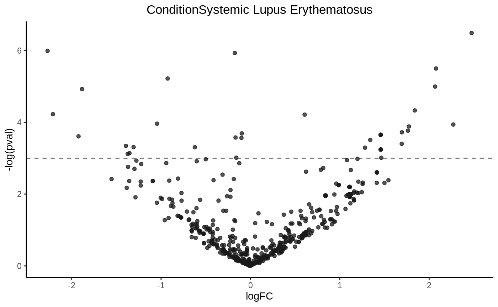
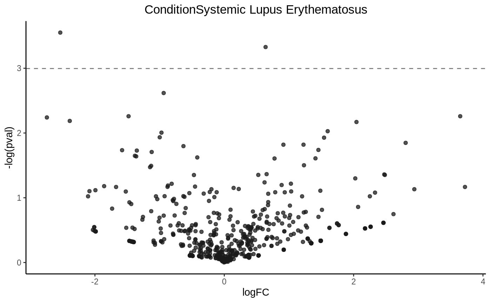
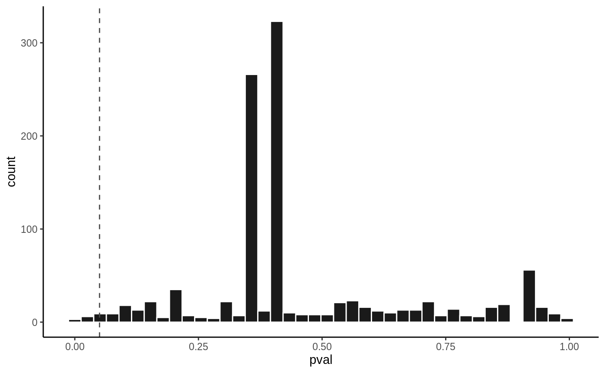
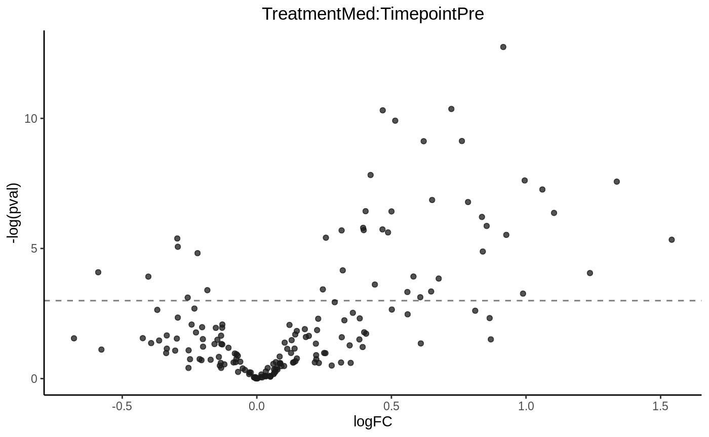

statistics.RmdHigh through-put experiments such as RNA-seq, proteomics, and metaboliomics estimate the abundance/concentration of hundrands to millions of features. Very commonly, researchers would like to answer questions such as which gene (or protein, metabolites) were differentially expressed or have differential abundance in treatment groups. Linear model and generalized linear model are widely used because they are highly flaxible to be adopted to different study designs. The HTSet package has a wrapper function model_fit() of three popular bioconductor packages, including limma, edgeR, and DESeq2, that performs differnetial analysis on a high through-put experiment dataset, and it returns the result in an organized structure.
The basic usage of model_fit() is below.
object must be a HTSet object. design is the study design matrix, usually returned by the model.matrix function. coef is the coefficient to perform statistical test. engine must be one of the three backend statistical package mentioned above. args is a list of additional parameters to be parsed to the backend statistical engine.
model_fit returns a list-like object. The elemenets that it contains are listed below.
results: A data.frame of the statistical test results for each gene/feature in each row. It has 5 columns. logFC has the estimate of the log2-fold-change corresponding to the effect. mean has the average lo2-expression for the gene/feature accross all samples. This is the AveExpr column in limma’s topTable or baseMean in DESeq2’s results. stat is the statistic value of the corresponding test. When using limma, this is the t-statistic value, same as the t column in the result of topTable. For edgeR, this is the f-statistic value for Quansi-likelihood test or the likelihood ratio statistic value for likelihood ratio test. Same as the column F or RT in the result of edgeR’s topTags. As for DESeq2, this is the Wald statistic value for Wald test or the difference in deviance between the reduced model and the full model for likelihood ratio test. same as the stat column in the output of DESeq2’s results. pval is the raw o-value and padj is the p-value after correction for multiple testing.
adjust.method: The method used to correct for multiple testing.
design: The design matrix
df: Degree of freedom for each gene/feature.
distribution: The distribution which the stat column in results is compared to generate the pval. This is t for t distribution for limma or DESeq2 with Wald test when useT eqauls to TRUE, f for f distribution for Quansi-likelihood test with edgeR, chisq for chi-squared distribution for likelihood ratio test with edgeR or DESeq2, and norm for DESeq2 with Wald test when useT equals to FALSE.
engin: The statistical package used as backend engine.
coef: The coefficient tested
params: Additional parameters parsed to model_fit
The HTSet package has two dataset included. They both can be loaded using the data() function.
In this vignette, we will go though some examples of using model_fit() to perform statistical analysis with the two datasets.
High through-put experimental data generated by nucleiic acid sequencing are were usually presented as counts per gene (RNA-seq) or counts per ASV/OTU (16S-seq). Counts data by nature do not fit gaussian distribution, thus linear model is not directly applicable. Thus, the major approches are (1) transforming counts data to continous data and normalized it, and (2) use negative binomial generalized linear model (glm). For the former approch, counts data are often transformed into logCPM followed by linear modeling. Another or a better approach is using limma’s voom function, which estimates the mean-variance relationship of the log-counts, and generates a precision weight for each observation. As for negative binomial glm, edgeR and DESeq2 two widely recognized packages.
The dataset exrna is the small RNA-seq result of isolated HDL from human plasma of 3 patients with systemic lupus erythematosus and 3 healthy control. The raw sequence fastq files were downloaded from GEO (GSE121865), and processed using the exceRNApipeline, using STAR agaist hg38. Gene counts were generated using htseq-count agaist gencode’s annotation.
exrna
#> S4 class: HTSet
#> nsamples: 6 nfeatures:1084
#> sample vars: 28 features vars: 2
#> slots:
#> $edata: 1084x6 matrix
#> $fdata: 1084x2 data.frame
#> $pdata: 6x28 data.frame
#> $assay: 0 listkable(exrna$pdata[,c(1,2,4,7)], format = "html") %>%
kable_styling()%>%
column_spec(5, background = "orange") %>%
scroll_box(width = "100%")| anatomical_location | Assay.Type | BioProject | Condition | |
|---|---|---|---|---|
| SRR8114380 | High density lipoprotein | ncRNA-Seq | PRJNA498678 | Systemic Lupus Erythematosus |
| SRR8114381 | High density lipoprotein | ncRNA-Seq | PRJNA498678 | Healthy Control |
| SRR8114382 | High density lipoprotein | ncRNA-Seq | PRJNA498678 | Systemic Lupus Erythematosus |
| SRR8114383 | High density lipoprotein | ncRNA-Seq | PRJNA498678 | Healthy Control |
| SRR8114384 | High density lipoprotein | ncRNA-Seq | PRJNA498678 | Systemic Lupus Erythematosus |
| SRR8114385 | High density lipoprotein | ncRNA-Seq | PRJNA498678 | Healthy Control |
We first create a study design matrix using the model.matrix function.
| (Intercept) | ConditionSystemic Lupus Erythematosus | |
|---|---|---|
| SRR8114380 | 1 | 1 |
| SRR8114381 | 1 | 0 |
| SRR8114382 | 1 | 1 |
| SRR8114383 | 1 | 0 |
| SRR8114384 | 1 | 1 |
| SRR8114385 | 1 | 0 |
We are going to test whether each gene is expressed differently between patinets and control, thus the cofficient that we are going to test should be ConditionSystemic Lupus Erythematosus (second column name). We can than call model_fit. Setting voom = TRUE tells model_fit to run voom before calling limma’s lmFit function.
coef = "ConditionSystemic Lupus Erythematosus"
fit1 = model_fit(exrna, design = design, coef = coef, engine = "limma", args = list(voom = TRUE))
#> Loading required namespace: limma
#> Loading required namespace: edgeRWhen args has an element named voom, model_fit calls the three functions voom, lmFit and eBayes in order. Additional arguments can be parsed to each of the three functions by assigning a list as value to the key of the corresponding step. For example, voom’s mean-variance trend plot was disabled by default. To enable the plot, parse it in a list to voom, as shown below.
fit1_2 = model_fit(exrna, design = design, coef = coef, engine = "limma",
args = list(voom = list(plot = TRUE)))Draw a volcano plot

P value histogram
It is also possible to transform count data into logCPM, and use limma directly.
exrna_cpm = exrna
exrna_cpm$edata = edgeR::cpm(exrna_cpm$edata, prior.count = 1, log = TRUE)
fit2 = model_fit(exrna_cpm, design = design, coef = coef, engine = "limma")| logFC | mean | stat | pval | padj | |
|---|---|---|---|---|---|
| ENSG00000103769.10 | -2.178666 | 8.969559 | -4.596506 | 0.0004068 | 0.3260259 |
| ENSG00000113319.13 | 1.578095 | 8.107325 | 4.240689 | 0.0008088 | 0.3260259 |
| ENSG00000180210.14 | -1.739524 | 8.624469 | -4.184622 | 0.0009023 | 0.3260259 |
| ENSG00000232807.2 | 1.382317 | 8.313330 | 3.643572 | 0.0026263 | 0.6277762 |
| ENSG00000231662.1 | -1.215158 | 8.191969 | -3.327182 | 0.0049367 | 0.6277762 |
| ENSG00000199804.1 | 1.170598 | 7.903577 | 3.324218 | 0.0049660 | 0.6277762 |
Drawing a volcano plot
P value histogram
To use DESeq2 to perform negative binomial glm, simply set engine = "DESeq2"
fit3 = model_fit(exrna, design = design, coef = coef, engine = "DESeq2")
#> Loading required namespace: DESeq2
#> using supplied model matrix
#> estimating size factors
#> estimating dispersions
#> gene-wise dispersion estimates
#> mean-dispersion relationship
#> -- note: fitType='parametric', but the dispersion trend was not well captured by the
#> function: y = a/x + b, and a local regression fit was automatically substituted.
#> specify fitType='local' or 'mean' to avoid this message next time.
#> final dispersion estimates
#> fitting model and testingAdditional parameters can be parsed to the args as a list named as DESeq. The parameters will be used internally by the DESeq function. Use ?DESeq to see all parameters that can be used. For example, to use t distribution to estimate p-values:
fit3_2 = model_fit(
exrna, design = design, coef = coef, engin = "DESeq2",
args = list(
DESeq = list(useT = TRUE)
)
)
#> using supplied model matrix
#> estimating size factors
#> estimating dispersions
#> gene-wise dispersion estimates
#> mean-dispersion relationship
#> -- note: fitType='parametric', but the dispersion trend was not well captured by the
#> function: y = a/x + b, and a local regression fit was automatically substituted.
#> specify fitType='local' or 'mean' to avoid this message next time.
#> final dispersion estimates
#> fitting model and testingDESeq2 also provides a likelihood ratio test. That can be done in a very similar way, by parsing additional arguments to the args parameter.
reduced = model.matrix(~1, data = exrna$pdata)
fit3_2 = model_fit(
exrna, design = design, coef = coef, engin = "DESeq2",
args = list(
DESeq = list(test = "LRT", reduced = reduced)
)
)
#> using supplied model matrix
#> estimating size factors
#> estimating dispersions
#> gene-wise dispersion estimates
#> mean-dispersion relationship
#> -- note: fitType='parametric', but the dispersion trend was not well captured by the
#> function: y = a/x + b, and a local regression fit was automatically substituted.
#> specify fitType='local' or 'mean' to avoid this message next time.
#> final dispersion estimates
#> fitting model and testing| logFC | mean | stat | pval | padj | |
|---|---|---|---|---|---|
| ENSG00000103769.10 | -2.5362785 | 3.178039 | -2.187611 | 0.0286980 | 0.961832 |
| ENSG00000207757.1 | 0.6388898 | 27.456948 | 2.098345 | 0.0358747 | 0.961832 |
| ENSG00000210077.1 | -0.9371747 | 11.433017 | -1.793000 | 0.0729729 | 0.961832 |
| ENSG00000113319.13 | 3.6485139 | 1.007428 | 1.623776 | 0.1044235 | 0.961832 |
| ENSG00000008300.17 | -1.4801477 | 4.102517 | -1.623719 | 0.1044357 | 0.961832 |
| ENSG00000116016.14 | -2.7431868 | 1.681584 | -1.614479 | 0.1064236 | 0.961832 |
Drawing a volcano plot

P value histogram
Similar to DESeq2, edgeR also performes negative binomial glm test. Two models are provided by edgeR, the quasi-likelihood test (QLF) and likelihood ratio test (LRT). model_fit uses QLF by default.
fit4 = model_fit(exrna, design = design, coef = coef, engine = "edgeR")
fit4$results[order(fit4$results$pval),] %>% head %>% kable()| logFC | mean | stat | pval | padj | |
|---|---|---|---|---|---|
| ENSG00000103769.10 | -2.3437702 | 9.869924 | 8.578464 | 0.0034193 | 0.5948105 |
| ENSG00000210077.1 | -0.9731867 | 11.183599 | 7.212137 | 0.0072688 | 0.5948105 |
| ENSG00000207757.1 | 0.5768948 | 12.224554 | 7.091641 | 0.0095773 | 0.5948105 |
| ENSG00000113319.13 | 3.9807611 | 8.828158 | 6.018755 | 0.0141937 | 0.5948105 |
| ENSG00000116016.14 | -2.6752084 | 9.264238 | 5.501202 | 0.0190482 | 0.5948105 |
| ENSG00000008300.17 | -1.6149331 | 9.950162 | 5.001152 | 0.0253811 | 0.5948105 |
Drawing a volcano plot
P value histogram

To use LRT, you need to specify it in the args.
fit5 = model_fit(exrna, design = design, coef = coef, engine = "edgeR",
args = list(model = "lrt"))
fit5$results[order(fit5$results$pval),] %>% head %>% kable()| logFC | mean | stat | pval | padj | |
|---|---|---|---|---|---|
| ENSG00000103769.10 | -2.3437702 | 9.869924 | 9.981416 | 0.0015813 | 0.4090667 |
| ENSG00000113319.13 | 3.9807611 | 8.828158 | 7.966385 | 0.0047654 | 0.4090667 |
| ENSG00000210077.1 | -0.9731867 | 11.183599 | 7.378458 | 0.0066010 | 0.4090667 |
| ENSG00000116016.14 | -2.6752084 | 9.264238 | 6.876766 | 0.0087323 | 0.4090667 |
| ENSG00000207757.1 | 0.5768948 | 12.224554 | 6.693561 | 0.0096762 | 0.4090667 |
| ENSG00000163631.17 | 3.6815563 | 8.740720 | 6.373366 | 0.0115846 | 0.4090667 |
Drawing a volcano plot
P value histogram
model_fit() also supports more complex study design models. The dataset lipidome is the result of a lipidomics analysis on isolated HDL from 10 human subjects in a 2x2 randomized cross-over study. The study was published on Metabolomics, 2019 (doi: 10.1007/s11306-019-1579-1).
lipidome
#> S4 class: HTSet
#> nsamples: 40 nfeatures:170
#> sample vars: 8 features vars: 15
#> slots:
#> $edata: 170x40 matrix
#> $fdata: 170x15 data.frame
#> $pdata: 40x8 data.frame
#> $assay: 0 listsummary(lipidome$pdata[,c("Treatment", "Timepoint")])
#> Treatment Timepoint
#> FF :20 Post:20
#> Med:20 Pre :20In the examples above, we were simply comparing disease patients to control. However in this study, we are asking a slightly more complex question. We would like to see how each lipid species change before and after the two treatments FF and Med. And since each subject was sampled four times, the model that we are using would be as blew. And \(\beta_3\) is the coefficient that we would like to test.
\[y = \beta_0 + \beta_1 Treatment + \beta_2 Timepoint + \beta_3 Timepoint*Treatment + \beta_4 Subject + e\]
The design matrix should be as below.
# in R's equation, ~ Treatment * Timepoint is a shorthand for
# ~ Treatment + Timepoint + Treatment * Timepoint
design = model.matrix(~ Treatment * Timepoint + Subject + 1, data = lipidome$pdata)
coef = "TreatmentMed:TimepointPre"Because the lipidome is continous data, the limma can be directly applied.
lipidome2 = transform_by_sample(lipidome, function(x) log(x/sum(x)))
fit6 = model_fit(lipidome2, design = design, coef = coef, engine = "limma")
fit6$results[order(fit6$results$pval),] %>% head %>% kable| logFC | mean | stat | pval | padj | |
|---|---|---|---|---|---|
| PC 36:2 p 1 | 0.9154783 | -8.144336 | 5.495343 | 0.0000029 | 0.0004968 |
| PC 34:2 p 1 | 0.7227051 | -6.497471 | 4.730082 | 0.0000316 | 0.0018875 |
| PC 38:4 p 2 | 0.4676405 | -7.948502 | 4.713055 | 0.0000333 | 0.0018875 |
| PC 35:2 1 | 0.5140877 | -6.833362 | 4.583482 | 0.0000496 | 0.0021068 |
| PE 38:4 p | 0.7617776 | -5.707228 | 4.326125 | 0.0001084 | 0.0030950 |
| PC 34:2 p | 0.6198772 | -6.737366 | 4.323611 | 0.0001092 | 0.0030950 |

model_fit() is simply a wrapper for the statistical pipelines from limma, edgeR, and DESeq2 with a clean interface and output format. You can certainly use limma, edgeR or DESeq2 directly and it is also not too complicated. Sometimes different models may come up with slightly different gene/feature list, however, as long as the model is approciate for the type of data to answer the specific question, your conclusion should be affected much. On thing to bear in mind that although most high through-put experiments are exploratory and hypothesis generating, running all different kinds of models and keep the one with the gene list that you like the most is probably a bad practice and may lead to inappropriate conclusion.